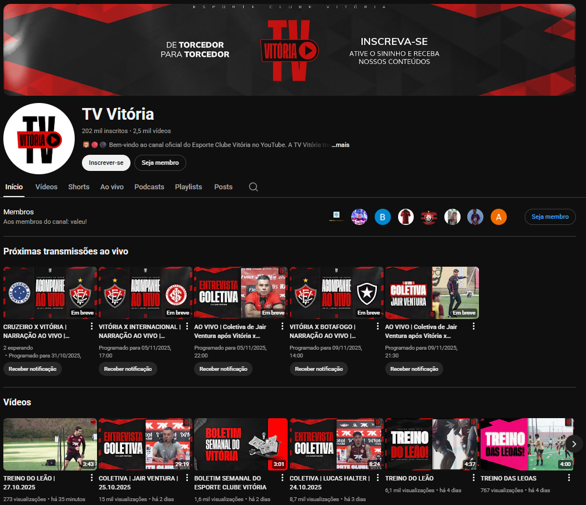
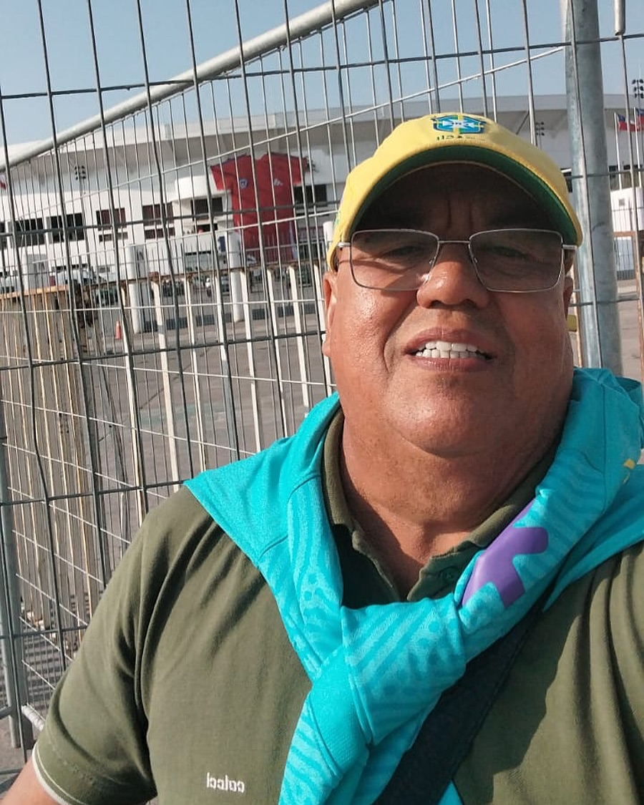
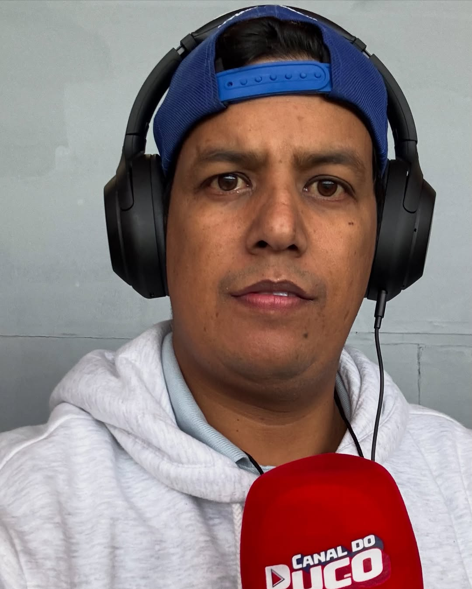
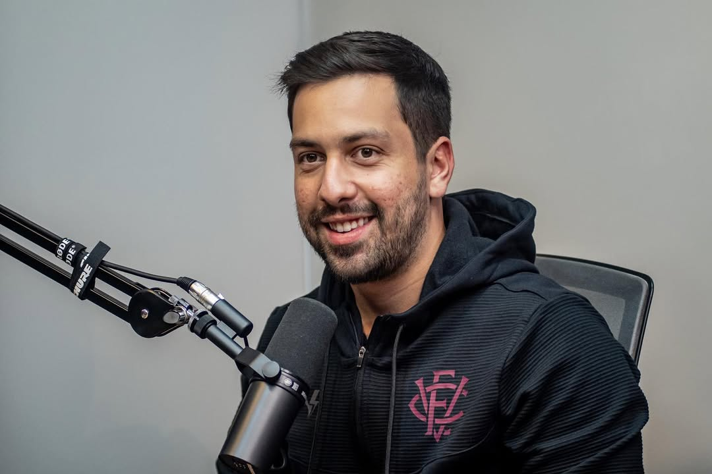
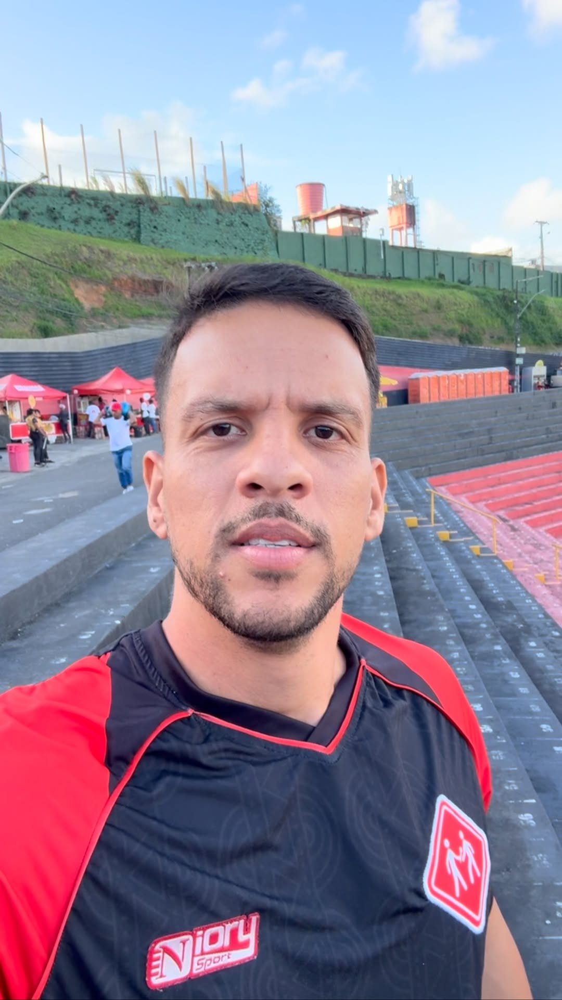
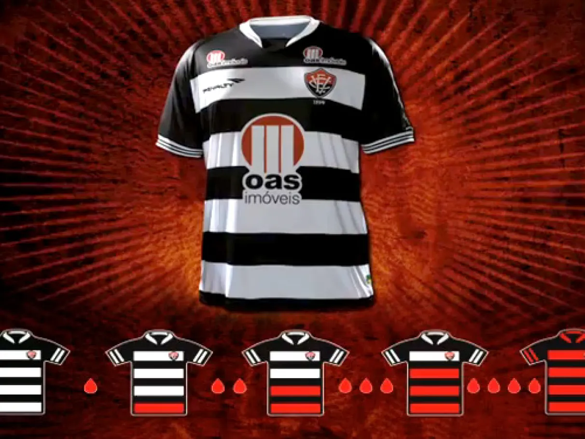
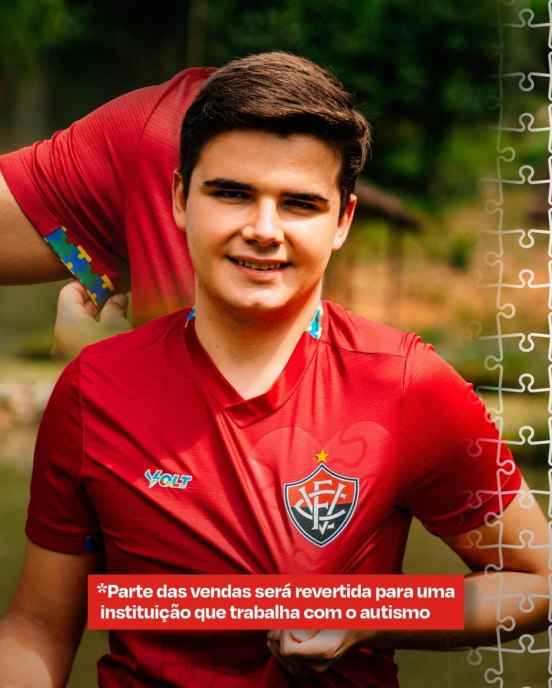
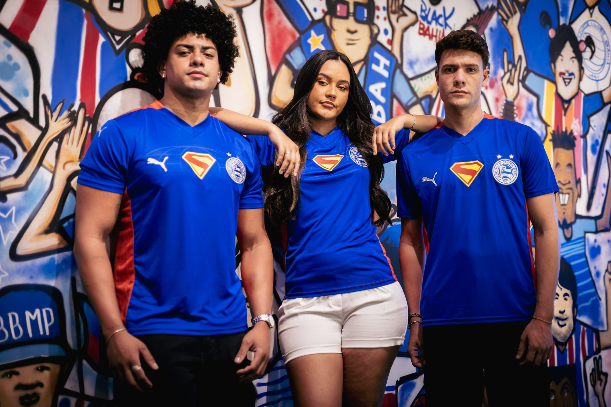
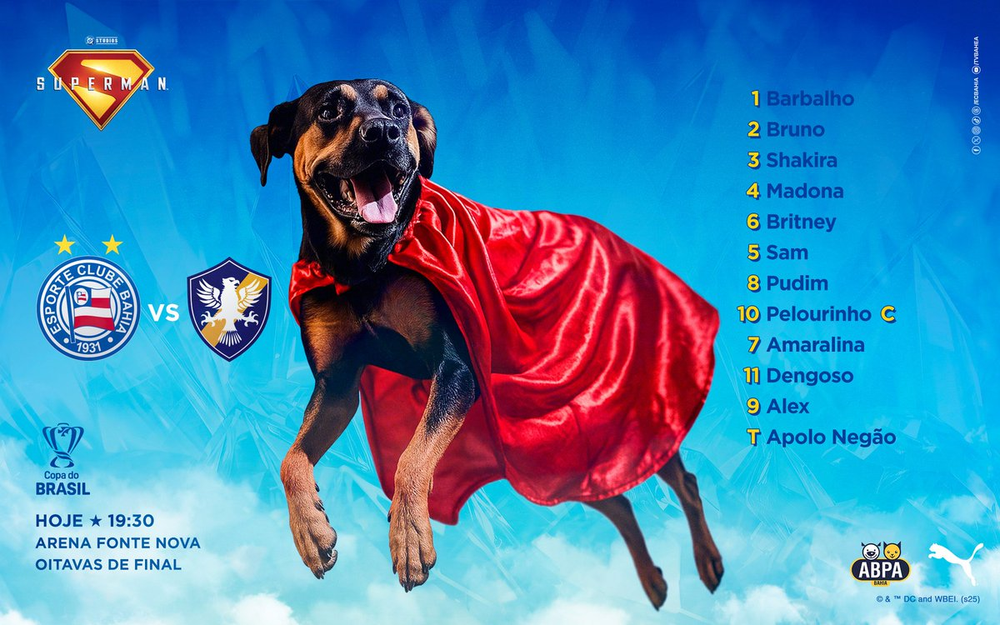
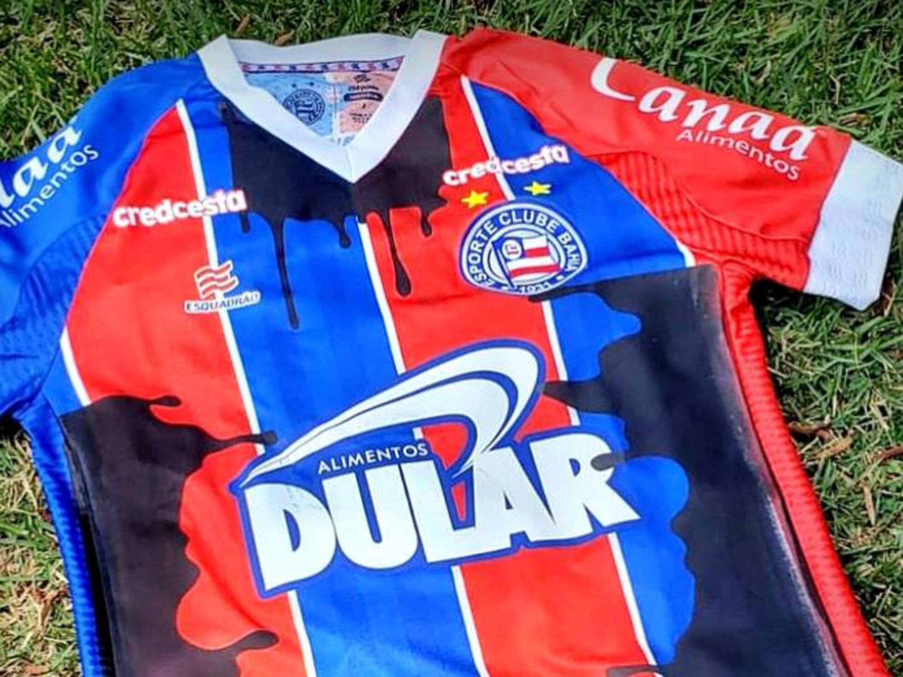

Como a comunicação digital transformou a paixão pelo futebol na
Bahia
A Nova Arquibancada Digital
O torcedor como protagonista na era das redes, dos vídeos e das transmissões.
É domingo em Salvador. O sol nasceu e as ruas já ganham cor, de azul, vermelho e branco, de vermelho e
preto.
Em Canabrava, um torcedor do Vitória acordou antes mesmo do despertador. Abre o armário e escolhe a camisa
com cuidado, a mesma de tantas histórias, de vitórias e tropeços. Pega a bandeira, confere se o celular está
carregado e segue rumo ao estacionamento do Barradão. Hoje é dia de jogo!
Do outro lado da cidade, em Brotas, uma torcedora do Bahia se arruma com o mesmo ritual. Combina o look com
a namorada, ajusta o lenço azul no cabelo e grava o primeiro story do dia: “Hoje tem Esquadrão na
Fonte!”
Cada um com sua cor, sua história, sua fé no resultado. Eles não se encontram nas arquibancadas, mas se
cruzam nas redes, nas transmissões ao vivo, nos comentários que viralizam. Ali, entre câmeras e celulares, o
futebol se reinventa e vira conteúdo, vira conversa, vira comunidade.
A paixão das arquibancadas agora se multiplica nas telas
Créditos da imagem: ge.globo.com
O amor pelo clube agora também é um post, um vídeo, uma análise no podcast, um corte no Reels. Essa é a nova
arquibancada! Um espaço onde o torcedor fala, cria, comenta e influencia.
Onde o grito que antes parava no alambrado atravessou timelines e transmissões.
E onde Bahia e Vitória, dois
gigantes de histórias e paixões opostas, aprendem a dialogar com uma torcida
que já não só assiste, mas participa, questiona, cria e move o jogo fora das quatro linhas.
É nesse cenário que nasce esta reportagem, uma produção Snowfall criada por três estudantes de jornalismo,
que percorrem os bastidores da comunicação esportiva na Bahia para entender como a paixão das torcidas se
transforma em estratégia, conteúdo e conexão digital.
Nesse novo cenário, surgem figuras que reconfiguram completamente a maneira como se fala de futebol: os
criadores de conteúdo. São torcedores que cruzaram a linha das arquibancadas para se tornarem comunicadores;
e comunicadores que assumem o papel de mediadores entre o clube e a torcida. Eles ocupam um espaço
independente, mas profundamente emocional, dentro de um ecossistema digital que cresce no mesmo ritmo da
paixão e da identidade que o futebol desperta.
Entre o grito e o tweet, entre o vídeo de análise e o desabafo pós-jogo, nasce uma nova camada de narrativa.
Mas o que significa, afinal, ocupar esse espaço de fala independente em meio à engrenagem profissional da
comunicação esportiva?
Quem responde é Marinho Júnior,
criador de conteúdo do Bahia, que reflete sobre o papel das mídias
alternativas e sobre como elas dialogam, ou tensionam, a relação com a comunicação oficial do clube.
Marinho Júnior
Quando a Torcida Vira Voz
A Virada de Comunicação no Futebol da Bahia
No futebol baiano, a forma como a informação circula já não cabe mais em um único formato. O que antes
chegava pelo rádio, pela TV ou pelos jornais impressos agora se espalha pelas redes sociais, pelos podcasts,
pelas transmissões ao vivo e até pelos grupos de WhatsApp.
O jornalismo esportivo tradicional e o conteúdo digital aprenderam a dividir, e muitas vezes a compartilhar,
o mesmo campo. O resultado dessa transformação é uma comunicação mais ágil, multifacetada e integrada, onde
cada formato se retroalimenta do outro.
Essa mudança não aconteceu do dia para a noite. Como explica o jornalista e executivo Erich Beting, fundador
do site Máquina do Esporte, o mercado esportivo brasileiro vem passando por um processo constante de
amadurecimento:
“Há pelo menos duas décadas a gente mergulha nesse dia a dia de marca esportiva. O mercado hoje é muito
melhor do que era há 5, 10 ou 20 anos.”
Erich Beting
Fundador do site Máquina do Esporte
A reflexão de Erich ajuda a entender como clubes, marcas e profissionais de comunicação vêm se adaptando
para transformar a paixão em estratégia, e o torcedor em protagonista de uma nova economia do esporte.
Uma entrevista na TV pode se transformar em um corte no Instagram; um comentário no rádio vira pauta em um
canal de influenciador; e uma notícia publicada em um portal logo ganha nova vida em um podcast de torcida.
Mais do que competir por espaço, essas mídias hoje se complementam, cada uma com sua própria força,
linguagem e alcance.
Erich Beting
No estado da Bahia, esse processo ganha contornos muito particulares. O Bahia, ao longo da última década,
foi pioneiro ao entender a comunicação não como ferramenta de marketing, mas como expressão de propósito
institucional. Entre 2013 e 2021, sob a liderança de Lênin Franco, o
departamento de marketing do clube se
transformou em um laboratório de inovação social e narrativa. Lenin, que vinha da mídia independente, trouxe
uma visão que aproximava o clube do seu povo, um movimento que ele mesmo descreve como uma reconstrução:
“O Bahia não teve uma mudança de chave simples, de ‘vamos fazer diferente’. Foi uma construção. Desde
2013, nosso pensamento era reaproximar e empoderar o torcedor do próprio clube, porque o Bahia é um time
popular. E essa mentalidade foi crescendo até se transformar em campanhas com propósito social, como o
Novembro Negro.”
Lenin Franco
Publicitário e executivo de marketing esportivo
A ação de 2018, em que os jogadores atuaram com nomes de personalidades negras nas camisas, marcou um
divisor de águas na história do clube e da comunicação esportiva no Brasil.
Mais do que uma campanha de marketing, foi um gesto político, identitário e coletivo, símbolo da nova fase
do clube, que reconhecia sua dimensão popular e assumia uma postura de protagonismo social. Lênin destaca
que o processo sempre foi colaborativo.
Essa estrutura permitia que o Bahia unisse agilidade e profundidade. Algumas campanhas eram planejadas com
antecedência, como o próprio Novembro Negro, outras surgiam de forma espontânea, como a ação em resposta às
queimadas na Amazônia, desenvolvida e publicada no mesmo dia. Essa capacidade de reagir com sensibilidade e
relevância transformou o Bahia em referência nacional de comunicação estratégica, ao alinhar discurso
institucional e impacto social.
Enquanto o Bahia consolidava sua narrativa de representatividade, o Vitória também iniciava um processo de
reposicionamento. Durante a gestão de Rafael
Curvello, entre 2021 e 2023, o clube reformulou sua identidade
digital, modernizou sua linguagem e buscou reconectar o torcedor com o sentimento de pertencimento
rubro-negro. Ele resume o propósito dessa nova fase:
“A missão era fazer o torcedor se sentir parte do Vitória, mostrar que ele não é apenas um espectador, mas
um pedaço vivo dessa história.”
Rafael Curvello
Publicitário e executivo de marketing esportivo
Os resultados não demoraram a aparecer. O canal oficial do clube no YouTube ultrapassou a marca de 50 mil
inscritos nesse período, reflexo de um conteúdo mais dinâmico, autêntico e conectado à torcida. Com acesso
direto aos bastidores e liberdade criativa, a TV Vitória se consolidou
como um verdadeiro canal de
pertencimento. Não se tratava apenas de informar, mas de emocionar, representar e valorizar o torcedor
rubro-negro.

TV Vitória no youtube
Rafael Curvello
Esses dois caminhos, o Bahia da democratização e o Vitória do pertencimento, apresentam um movimento mais
amplo, o da profissionalização da comunicação esportiva baiana, que se alimenta da interação constante entre
o que é institucional e o que é espontâneo, entre o que vem de dentro dos clubes e o que nasce das vozes ao
redor deles.
Apesar dos avanços, o caminho da profissionalização na comunicação esportiva brasileira ainda é tortuoso.
Muitos clubes, mesmo mergulhados em estruturas cada vez mais complexas, ainda hesitam em se reconhecer como
marcas de grande porte, com responsabilidades que ultrapassam o gramado. A visão empresarial do futebol vem
crescendo, mas ainda tropeça em velhos hábitos, aqueles impulsos passionais que fazem dirigentes e
administradores agirem mais como torcedores exaltados do que como gestores de imagem.
Erich Beting, especialista no tema, observa que alguns clubes já compreenderam a
importância de uma postura corporativa e constroem sua comunicação com estratégia e propósito, enquanto
outros ainda se perdem em provocações rasas e reações emocionais. Lá fora, exemplos como Manchester United e
Barcelona tratam o rival com a distância profissional de quem entende que defender seu torcedor não exige
tripudiar do outro. No Brasil, essa maturidade ainda é um aprendizado em andamento, uma lição que se
desenrola a cada tweet impulsivo e a cada campanha que ultrapassa o limite do bom senso.
A fala de Beting revela um ponto essencial da digitalização que aproximou clubes e torcedores como nunca
antes, mas essa proximidade também cobra responsabilidade. A fronteira entre o entretenimento e a gestão de
marca tornou-se cada vez mais fina, e navegar por ela exige sensibilidade, método e, acima de tudo,
consciência de que o futebol, hoje, é também narrativa e reputação. O desafio dos próximos anos será
equilibrar paixão e profissionalismo sem deixar que um destrua o outro.
Créditos da imagem: bahia.ba
Entre o Microfone e a Live
O Encontro (e o Estranhamento) entre Rádio e Mídias Independentes
No futebol moderno, a comunicação deixou de ser monopólio de um único veículo. Rádio, TV, jornal impresso,
redes sociais e canais independentes coexistem, cada um com seu papel e público. O desafio para clubes e
profissionais é equilibrar tradição e inovação, integrando canais estabelecidos com novas vozes digitais,
sem perder a autenticidade e a conexão com o torcedor.
Quem viveu essa transformação de perto foi Édson
Marinho, radialista da Rádio Metrópole. Com décadas de
cobertura esportiva na Bahia, ele acredita que o rádio não apenas sobreviveu, mas se reinventou. Marinho
defende que, ao contrário do que se previu com a chegada da TV, o rádio nunca morrerá e que todos os meios -
rádio, podcast, internet, redes sociais, jornal e televisão - podem coexistir, pois há espaço para todos.
Enquanto as redes sociais fragmentaram a atenção, o rádio preservou um vínculo emocional raro com o
torcedor,
seja no trajeto até o estádio ou na própria arquibancada.
No entanto, a integração dessa nova realidade não é simples. Marinho Júnior, filho de Édson e criador do
Canal do Puco, representa a nova geração que transformou a comunicação esportiva em um diálogo direto, com
linguagem
popular e ritmo de rede social.
Ele reconhece que essa transição enfrenta resistência. Segundo Marinho Júnior, existe um certo preconceito
da mídia tradicional contra a mídia independente. Ele aponta que profissionais formados, que batalharam por
seu espaço, ainda têm dificuldade em aceitar que qualquer pessoa possa criar um canal e frequentar os mesmos
espaços, como coletivas de imprensa.
O que distingue o trabalho das mídias independentes, segundo Marinho Júnior, é a liberdade para falar com o
torcedor de igual para igual. Embora a estrutura de sua cobertura seja semelhante à dos canais oficiais, com
narradores e comentaristas, o torcedor percebe a diferença do formato independente. Essa independência
permite uma liberdade para criticar, algo que as TVs dos clubes, por serem mais "blindadas", não fariam,
como apontar que um jogador perdeu um gol claro ou que está em má fase.
Ele reforça, porém, que a independência não significa irresponsabilidade. Marinho Júnior lembra que a
internet não é "terra de ninguém" e que é preciso ter cuidado, pois muitos respondem judicialmente pelo que
publicam. Trata-se de fazer um trabalho com liberdade, mas com consciência.
Entre Ondas, Telas e Plataformas: A
História das
Transmissões Esportivas no Brasil
Início do Rádio no Brasil
Em 7 de setembro de 1922 houve a inauguração do rádio no
Brasil. No início, as transmissões sobre o esporte no rádio se resumiam a boletins informativos e
não se restringiam apenas ao futebol. Não havia narrações continuas, somente cometarios no estudio
Primeiras transmissões esportivas
Há controvérsias sobre a primeira transmissão por rádio
no
Brasil, historiadores e fonte apontam que a primeira transmissão foi realizada em fevereiro de
1932,
mas existem algumas narrativas que destacam um jogo entre palmeiras e palestra italia em julho de
1931. Não é possível afirmar com certeza, mas é certo afirmar que na década de 1930 já existiam as
transmissões por rádio no Brasil.
Autosfalantes pelo país
Foi um marco histórico, a primeira copa do mundo que o
Brasil acompanhou de forma massiva, realizada na França. Foram instalados diversos de autos
falantes
por várias cidades do país para todo o Brasil poder acompanhar a seleção brasileira com a narração
de Gagliano Neto.
Primeira transmissão de TV
A primeiras partida transmitida pela tv ocorreu na copa
de
1950, na época a televisão ainda era algo de difícil acesso, poucas pessoas tinham, mas essas
conseguiram assistir a partida entre Brasil e México jogada no Maracana. A transmissão foi feita
pela Tv Tupi, esse jogo abriu portas para as grandes transmissões com imagens.
Expansão da TV brasileira
Na década de 1960 marcou um grane crescimento da tv
Brasileira, com o surgimento da Tv Globo em 1965.
as transmissões passaram a ter uma qualidade melhor, maior número de câmeras nos estádios e
algumas
técnicas de edição. Esse período marcou o surgimento de grandes nomes como: Galvão Bueno, Luciano
do
Valle e Silvio Luiz.
Primeira Copa em cores
Um marco Histórico para tv, a primeira copa transmitida
com cores, Embora a televisão brasileira ainda estivesse em processo de implantação das
transmissões coloridas, que se se tornariam oficiais em 1972 a Copa de 70 funcionou como um
ensaio
geral, aproximando o público de uma experiência visual inédita.
Domínio TV + Rádio
A Televisão e o rádio juntos dominaram as transmissões
esportivas, levando emoção para milhões de pessoas pelo país. Ocorreu um grande crescimento de
investimento nas transmissões e nos direitos dos jogos, aconteceu o surgimento de programas
esportivos e uma maior popularização dos esportes. O rádio se manteve como uma opção popular, com
sua narração única e seu imediatismo, como meio mais rápido de atualizações.
Chegada do HD
Em 2002 na final da copa do mundo ocorreu a primeira
transmissão em hd de uma partida de futebol em salas de cinema para convidados. Somente em 2008 a
Globo anunciou a transmissão do brasileirão em hd.
Era da Internet e Streaming
Com a popularização da internet, também se mudou a forma
de assistir e ouvir partidas de futebol. Web rádios começaram a surgir, serviços de streaming
entraram na disputa por direitos televisivos e clubes criaram seus canais com intuito de se
aproximarem dos torcedores.
Fragmentação e multiplaformas
Começou uma nova era nas transmissões, a internet ganha
mais força e ameaça grandes canais de TV, com transmissões gratuitas e com os clubes com maior
poder
de escolha, os jogos são transmitidos por diversos canais diferentes, seja na televisão aberta ou
fechada, nos streamings ou no youtube de forma gratuita.
Lênin Franco, que começou sua trajetória na mídia alternativa antes de assumir o marketing do Bahia,
enxerga o embate entre o novo e o tradicional como algo inevitável e essencial para o amadurecimento da
comunicação esportiva. Para ele, vivemos uma era em que cada indivíduo se tornou uma emissora, produzindo
conteúdo no momento e da forma que quiser. Essa mudança, natural para quem nasceu na lógica das redes, foi
difícil de ser assimilada por parte da velha guarda do jornalismo, acostumada a deter o controle absoluto
sobre o discurso. Muitos profissionais, diz ele, simplesmente não conseguiram se adaptar ao novo ritmo
imposto pela internet.
Lênin também chama atenção para um detalhe muitas vezes subestimado, o poder da atenção ativa. Quando um
torcedor escolhe assistir a um canal no YouTube, ele não é um espectador passivo, é um participante.
A análise de Lênin evidencia a essência da mídia independente, ela não fala para o torcedor, mas com ele. É
uma conversa horizontal, feita de reciprocidade e afeto, onde a voz da arquibancada finalmente encontra eco
nas telas.
Trazendo o ponto de vista institucional, Rafael Curvello, enxerga nesse diálogo um potencial de
fortalecimento mútuo. Ele explica que a imprensa tradicional tem um papel fundamental de registro e alcance,
enquanto os canais independentes falam direto com o torcedor. Para ele, o segredo não está em escolher um ou
outro, mas em entender como essas forças podem trabalhar juntas.
O clube, portanto, precisou reconhecer os criadores de conteúdo como parceiros na amplificação da marca, e
não como rivais. Assim, o clube se posiciona como mediador, conciliando a tradição do rádio com a linguagem
dos influenciadores.
Entre essas novas vozes está Anderson Mattos, criador do Canal do Dinâmico, que cobre o Vitória. Ele vê o
papel das mídias alternativas como complementar. Anderson avalia que seu trabalho ajuda o clube
naturalmente, pois alcança "bolhas" de audiência que os canais oficiais, como a TV Vitória, por vezes não
alcançam.
Anderson Mattos também enxerga na comunicação independente uma forma de manter a paixão viva, especialmente
nos momentos difíceis. Ele destaca que o maior patrimônio de um time é o torcedor e que os canais
independentes não dependem 100% do desempenho do time, pois se baseiam nessa paixão. Durante o período mais
delicado da história recente do Vitória, entre 2019 e 2021, com a queda para a Série C, Anderson manteve o
elo com a torcida, continuando a produzir conteúdo mesmo sem vitórias, o que demonstrou a força dessa
conexão.
O relato de Anderson resume o papel das mídias independentes: elas não concorrem com a comunicação oficial,
elas a complementam. Ao atingir públicos diferentes, esses criadores expandem o alcance das narrativas do
clube, gerando engajamento genuíno. O torcedor que acompanha o Canal do Dinâmico pode não assistir à TV
Vitória, mas é impactado positivamente pelo clube.
Essa sobreposição de vozes cria uma comunicação em rede. Enquanto o rádio mantém o calor do tempo real, as
mídias digitais ampliam o alcance. Os clubes deixam de ser meros emissores e passam a atuar como mediadores,
equilibrando tradição e inovação. O desafio é garantir que essa integração preserve o vínculo autêntico com
o torcedor.
As trajetórias de Édson Marinho, Marinho Júnior, Rafael Curvello, Lênin Franco e Anderson Mattos se cruzam
como capítulos da reinvenção da comunicação esportiva na Bahia. Essas quatro vozes não se anulam; elas se
completam. Juntas, contam a história de uma nova ecologia midiática, na qual as fronteiras entre imprensa,
entretenimento e ativação de marca se dissolvem. O futebol baiano vive um momento de convergência, onde o
torcedor, mais do que nunca, assume o centro dessa narrativa, participando ativamente do jogo fora das
quatro linhas.

Édson Marinho representa o rádio que
sobrevive ao tempo, sustentado pela emoção e credibilidade.

Marinho Júnior personifica a voz
independente que fala ao torcedor sem filtros, com ritmo
digital.

Rafael Curvello traz o olhar institucional,
focado em transformar o clube em marca e comunidade.

Anderson Mattos simboliza o
torcedor-comunicador, que movido pela paixão, transforma o
amor pelo clube em conteúdo.
Créditos da imagem: metro1.com.br
Do Campo à Timeline
O encontro entre a mídia tradicional e independente
As arquibancadas já não se limitam às cadeiras de cimento ou aos gritos do estádio. Hoje, elas se estendem
pelas telas, em vídeos, transmissões, tweets e comentários que percorrem o feed dos torcedores. É ali que o
futebol baiano encontrou uma nova forma de se comunicar, de forma espontânea, participativa e apaixonada.
Nesse cenário, os influenciadores e as mídias independentes se tornaram vozes legítimas da torcida,
aproximando clubes e fãs com a linguagem da rua e o olhar de quem sente o jogo por dentro.
O Bahia foi um dos primeiros clubes do país a entender esse movimento e abraçá-lo de forma institucional.
Lênin Franco, lembra que a equipe chegou a transformar a irreverência das redes em conteúdo oficial.
A iniciativa simbolizou uma virada cultural, o clube que antes falava para o torcedor passou a falar com
ele. Ao legitimar a crítica e a espontaneidade, o Bahia mostrava que o conteúdo produzido pelos próprios fãs
não era ameaça, era ativo de marca. Esse entendimento se espalhou e inspirou outros clubes, como o Vitória,
que começou a construir pontes com sua base digital a partir do diálogo com influenciadores e criadores de
conteúdo.
Um dos nomes mais representativos dessa nova geração é Yuri Figueiredo, criador do canal ECVídeos, voltado
ao Esporte Clube Vitória. Com mais de 40 mil inscritos no YouTube e 50 mil seguidores no Instagram, Yuri
transformou o amor pelo clube em conteúdo, e o conteúdo em ponto de encontro para milhares de rubro-negros.
Segundo ele, os criadores de conteúdo ajudaram o Vitória a compreender melhor o próprio torcedor e a
repensar a forma como se comunica:
“O trabalho dos influencers teve sim uma importância para a comunicação do clube entender como se
comunicar melhor com o torcedor, visto que os influencers são torcedores de arquibancada.”
Yuri Figueiredo
Criador do canal ECVídeos
A influência das mídias independentes ficou especialmente evidente em momentos delicados. Quando o Vitória
enfrentava fases difíceis, com rebaixamentos e crises dentro de campo, canais como o ECVídeos e o Canal do
Leão mantiveram viva a conexão emocional com a torcida. Enquanto o clube tentava se reorganizar, Yuri
produzia conteúdos, relembrava conquistas e reforçava o sentimento de pertencimento. Assim, mesmo na Série
C, o canal seguia como um ponto de resistência, ajudando a sustentar a autoestima da torcida e ampliando o
alcance das mensagens do clube.
Essa relação de confiança acabou se transformando em parceria. Nos últimos anos, Yuri participou de
campanhas oficiais, de lançamentos de lojas a ações com patrocinadores e eventos de marketing, que simboliza
a aproximação entre o Vitória e sua base digital. O influenciador destaca que essa troca humaniza o clube e
faz o torcedor se sentir parte da rotina:
“Hoje o Vitória se comunica com o torcedor de forma mais próxima, com conteúdos que mostram bastidores,
treinos e conversas mais informais. Isso aproxima o torcedor do time e faz ele se sentir mais pertencente”
Yuri Figueiredo
Criador do canal ECVídeos
Yuri Figueiredo
Mais do que audiência, os canais independentes oferecem algo que nem sempre cabe nas comunicações oficiais:
identificação. O torcedor que acompanha o ECVídeos se vê refletido ali, com as mesmas emoções, o mesmo
vocabulário e as mesmas frustrações. É esse tom autêntico que faz o público confiar e se engajar.
Os números confirmam essa virada. Nos últimos anos, Bahia e Vitória ampliaram suas receitas por meio de
ações de marketing, parcerias comerciais e estratégias digitais que fortaleceram suas marcas e consolidaram
o torcedor no centro das decisões. Mais do que simplesmente divulgar, o desafio agora é gerar valor,
transformando cada ação de comunicação em um gesto de aproximação e fidelização.
“Estão informando o torcedor com a linguagem que o torcedor entende. Quando ele vê nos canais
independentes um cara que é como ele, que é da arquibancada, ele se identifica mais.”
Yuri Figueiredo
Criador do canal ECVídeos
Yuri cita como inspiração uma das campanhas mais emblemáticas da história recente do Vitória, a de doação de
sangue, em 2012, quando as listras vermelhas da camisa voltavam gradualmente à medida que os torcedores
doavam sangue. “Foi muito bacana ver a cada jogo as listras vermelhas aumentando até completar a camisa
toda”, recorda. Para ele, ações como essa provam que a relação entre clube e torcida é construída na emoção
e na participação, os mesmos pilares que sustentam hoje a comunicação digital.
No Bahia, essa relação entre influenciadores e clube também é marcada por altos e baixos. Marinho Jr., o
Puco, influenciador e torcedor ativo do Tricolor, reconhece o impacto das novas mídias, mas chama atenção
para a responsabilidade que vem com a visibilidade.
“Tem gente que se passa, tem gente que se perde no nível de influenciador e acha que pode tudo. [...] A
palavra já diz: influenciar pessoas. Então, se você quer influenciar, precisa ter responsabilidade.”
Marinho Jr.
Criador do canal do Puco
Puco destaca que parte da desconfiança que o Bahia demonstra hoje com alguns influenciadores vem de
experiências passadas, casos de excessos, conflitos e até processos judiciais. Para ele, o relacionamento
precisa ser reconstruído com base na confiança e no respeito mútuo, sem que se perca o senso crítico que
caracteriza a torcida.
Marinho Jr
Mesmo com esses desafios, ele elogia o legado deixado por Lênin Franco na comunicação tricolor:
“O momento ali da gestão de marketing do Bahia com o Lênin Franco foi uma sequência de maravilhosas ações.
Ele era um cara que saiu da arquibancada para virar diretor de marketing. Sabia muito do que estava
pegando do clube e jogando pra arquibancada.”
Marinho Jr.
Criador do canal do Puco
O olhar de quem veio das arquibancadas, como Lênin, foi essencial para construir campanhas que dialogassem
com a identidade popular e cultural do clube, das homenagens às raízes africanas às ações de afirmação
racial e social. O Bahia transformou causas em bandeiras, e bandeiras em orgulho.

O time de futebol Vitória, lançou a
campanha "Meu
sangue é rubro-negro", removendo temporariamente o vermelho do uniforme para incentivar a doação
de
sangue ao Hemocentro da Bahia (Hemoba).
O Esporte Clube Vitória lançou a campanha "Dor
escondida não
cura" para o Setembro Amarelo, usando mensagens ocultas nos uniformes e diversas ações no estádio
para incentivar pessoas com sofrimento mental a não esconderem seus sentimentos e procurarem ajuda
especializada.

Em apoio ao Dia Mundial de Conscientização sobre o
Autismo,
uma nova camisa especial feita pela @somosvolt foi lançada para promover respeito e inclusão, com
parte do valor das vendas sendo destinada a organizações sociais que trabalham com a causa.

O Esporte Clube Bahia SAF, a PUMA e a Warner Bros.
Discovery
Global Consumer Products lançaram um uniforme especial e limitado inspirado no Superman, marcando
a
primeira vez que um time brasileiro tem uma camisa oficial de Super-Herói, coincidindo com a
estreia
do novo filme do personagem.

Em uma ação de incentivo à adoção, os jogadores do
Bahia
entraram em campo vestidos de Superman e acompanhados por cães da Associação Brasileira Protetora
dos Animais (ABPA), divulgando um PIX para doações à instituição.

Em protesto contra o desastre ambiental nas praias
nordestinas, o Bahia jogará contra o Ceará com uma camisa "manchada de óleo" para questionar a
responsabilidade e a impunidade pelo vazamento.
Essa convergência entre torcedores, influenciadores e clubes não é uma tendência passageira, é parte de uma
transformação estrutural no modo como o futebol se comunica. O especialista em marketing esportivo Erich
Beting destaca que o influenciador se tornou um elo estratégico entre marca e comunidade.
“O influencer virou uma mídia própria, alternativa. Para o clube, ele é essencial estar próximo — com o
maior cuidado que isso pode representar, para o bem e para o mal. [...] A chave do negócio é a
autenticidade.”
Erich Beting
Fundador do site Máquina do Esporte
Beting observa que o crescimento do marketing de influência é um fenômeno global, e que o Brasil, com sua
paixão e criatividade, tornou-se referência nesse campo. Para ele, os clubes precisam enxergar os
influenciadores como parceiros estratégicos, capazes de potencializar campanhas, reverter momentos de crise
e traduzir a emoção do torcedor em engajamento real.
Ao compreender esse papel, Bahia e Vitória passam a enxergar seus influenciadores não apenas como fãs
engajados, mas como agentes de comunicação capazes de sustentar, amplificar e até proteger a reputação do
clube. São pontes vivas entre a marca e arquibancada, o elo entre o coração do torcedor e o discurso
institucional.
Créditos da imagem: TV Vitória
(Youtube)
Comunicar para sobreviver
O desafio dos clubes do interior na era digital
Se nos blocos anteriores ficou claro como Bahia e Vitória lidam com influenciadores, torcedores e
estratégias de comunicação em estruturas grandes e cada vez mais profissionalizadas, o cenário muda
completamente quando o foco se desloca para o interior do estado. Ali, comunicar não é apenas uma área do
clube, é também improviso, aprendizado e, muitas vezes, sobrevivência.
É o caso do Jacuipense, clube de Riachão do Jacuípe, que nos últimos anos se consolidou como uma das forças
do interior. À frente da comunicação do Leão Grená está Lucas Pena, que expressa a realidade de dezenas de
clubes do estado, com poucos recursos, equipes reduzidas e a necessidade de aprender tudo fazendo.
“O Jacuipense é um clube de interior, um clube menor de expressão, então a gente não tem tanta verba. A
gente se vira com o que tem. E isso acaba sendo um desafio. Acho que essa é a parte gostosa também de você
aprender cada vez mais.”
Lucas Pena
Comunicação do Leão Grená
Na prática, isso significa acumular funções. Lucas fotografa, filma, cobre jogos da base e do profissional,
acompanha viagens e ainda cumpre o papel de assessor de imprensa, organizando entrevistas e preparando os
jogadores para falar com a mídia.
“Eu mesmo cheguei no Jacuipense e não sabia fotografar bem. Hoje eu me considero um fotógrafo esportivo,
meus amigos me consideram fotógrafo esportivo. Eu me especializei naquilo, gostei tanto que tenho meu
material hoje, invisto nisso. Você acaba aprendendo não só no que você é bom.”
Lucas Pena
Comunicação do Leão Grená
Quando o calendário nacional desaparece, como ocorreu em 2025, em que o clube não teve Série D, Copa do
Brasil ou Copa do Nordeste, a comunicação se concentra na divisão de base, que se tornou um dos maiores
ativos do Jacuipense, responsável por revelar jogadores que hoje atuam em clubes como Red Bull Bragantino e
Botafogo.
Além de criar conteúdo, a equipe precisa manter o relacionamento com a imprensa, gerando pauta e
alimentando jornalistas com informações sobre jogos, renovações e novidades do clube. Lucas explica que esse
cuidado não é apenas institucional, ele também ajuda os jogadores a construírem sua imagem e se posicionarem
frente à mídia.
“Ninguém ganha prêmio de melhor do mundo só jogando no campo. O cara tem que saber se posicionar, falar,
dar uma entrevista. Então eu brinco com eles: ‘Hoje nossa Champions League é aqui, com a gente fazendo o
trabalho de comunicação’.”
Lucas Pena
Comunicação do Leão Grená
No interior, a cooperação entre clubes é outra peça-chave para o funcionamento da comunicação. Em viagens,
troca de contatos, envio de fotos e suporte mútuo ajudam clubes com menos estrutura a se manterem ativos na
cobertura dos jogos.
Mas nem tudo são facilidades. No Baianão, rivalidades regionais e briga por posição, podem dificultar o
intercâmbio de informações, seja trocando escalações ou repassando fotos de jogos. Apesar de alguns
incidentes, Lucas reforça que a colaboração ainda é a regra:
“Claro que tem aquelas dificuldades. Mas a maioria ajuda muito. Até gosto de dizer: ‘não tem sabor melhor
do
que ajudar alguém quando o meu time ganha’. A gente compartilha, respeita, mas ajuda. Isso é o que mantém
o
futebol do interior funcionando.”
Lucas Pena
Comunicação do Leão Grená
No fim das contas, comunicar no interior da Bahia é dominar várias funções, improvisar, formar novos
profissionais e aprender na prática. Para clubes como o Jacuipense, a comunicação vai muito além de
publicações nas redes, é a junção entre a sobrevivência, visibilidade e valorização do trabalho local.
Créditos da imagem: Correios24Horas
A Era da Criatividade no Futebol
O Brasil Como Laboratório do Marketing Esportivo
Antes de mergulhar nos números e estratégias, é importante compreender o contexto dessa transformação.
O marketing esportivo deixou de ser apenas uma vitrine de comunicação e passou a ocupar um papel central na
geração de receitas, no fortalecimento da marca e na construção de comunidades de torcedores.
Segundo o jornalista e especialista em marketing esportivo Erich Beting, essa mudança reflete uma nova
mentalidade dentro dos clubes, uma percepção mais estratégica sobre o valor do engajamento e da narrativa.
Ele observa também a singularidade do mercado brasileiro nas redes sociais, especialmente quando comparado
ao cenário europeu:
Segundo o jornalista e especialista em marketing esportivo Erich Beting, essa mudança reflete uma nova
mentalidade dentro dos clubes, uma percepção mais estratégica sobre o valor do engajamento e da narrativa.
Ele observa também a singularidade do mercado brasileiro nas redes sociais, especialmente quando comparado
ao cenário europeu.
Na prática, isso significa que Bahia e Vitória podem, sim, aprender com os modelos internacionais, mas
também têm espaço para ousar. Campanhas irreverentes, memes, influenciadores e conteúdos exclusivos
tornaram-se ferramentas poderosas, capazes de gerar resultados de engajamento mais diretos e orgânicos do
que em mercados excessivamente controlados. O Brasil, nesse sentido, funciona como um observatório de
marketing esportivo digital, onde a criatividade é o principal ativo e a paixão é o combustível que move
tudo.
Os números confirmam essa virada. Nos últimos anos, Bahia e Vitória ampliaram suas receitas por meio de
ações de marketing, parcerias comerciais e estratégias digitais que fortaleceram suas marcas e consolidaram
o torcedor no centro das decisões. Mais do que simplesmente divulgar, o desafio agora é gerar valor,
transformando cada ação de comunicação em um gesto de aproximação, pertencimento e fidelização.
Comparativo de Seguidores: Bahia vs. Vitória (2020 vs. 2025) - credito IBOPE REPUCOM
Muito Além do Placar
O torcedor e a experiência do futebol
No futebol baiano, redes sociais, vídeos e transmissões aproximam torcedores e clubes como nunca antes. Mas,
no fim das contas, o que realmente importa é a paixão do torcedor, o amor pelo time que transforma cada
jogo, cada campanha e cada gesto em algo vivido de dentro para fora.
E é exatamente essa paixão que eles compartilham, mostrando como cada campanha e cada momento no campo toca
quem está na arquibancada, física ou digital. É por isso que ouvir essas histórias revela tanto sobre a
relação entre torcedor e time.
Veja, nos relatos desses torcedores, como a paixão se traduz em emoção, pertencimento e conexão.